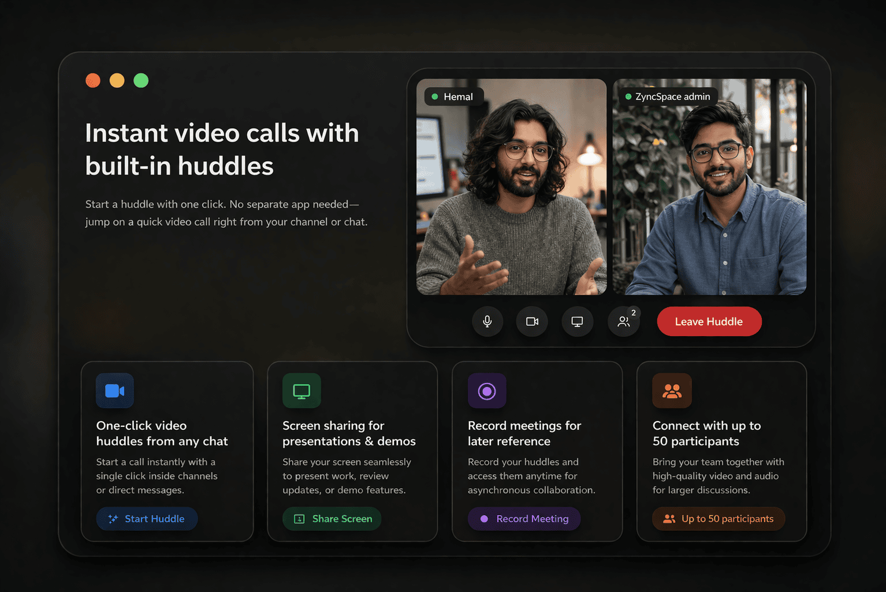
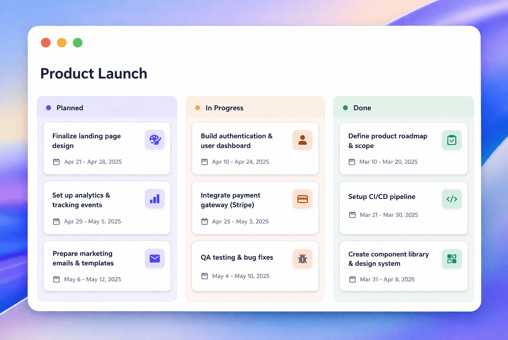

Brings together everything modern teams need
Combines chat, Kanban boards, calendar sync, secure messaging, and AI tools — quick to set up, fast to use, and perfect for teams moving from Slack, Trello, or WhatsApp.
Group chat with threads
Organize team conversations into clear, focused threads so nothing gets lost, and everyone stays on topic.
Kanban boards for task tracking
Track tasks visually, manage priorities, and see project progress in one easy-to-read board.
Calendar syncing with reminders
Sync events across devices, set reminders, and ensure your team never misses a deadline or meeting.
Take control over your team space
Protect sensitive conversations with advanced privacy settings and secure, encrypted messaging.
Video Conferencing
Host high-quality video meetings with your team. Share screens, record sessions, and collaborate in real-time.
File Sharing
Share documents, images, and files instantly. Keep everything organized and accessible to your team.

Built-in AI to rewrite and summarize
Use AI to polish your messages and get quick conversation recaps.
Instant video calls with built-in huddles
Start a huddle with one click. No separate app needed—jump on a quick video call right from your channel or chat.
- One-click video huddles from any chat
- Screen sharing for presentations & demos
- Record meetings for later reference
- Connect with up to 50 participants


Kanban boards organized by channel
Every channel gets its own Kanban board. Keep tasks tied to conversations so your team always knows what's happening and why.
- Tasks linked to specific channels
- Drag-and-drop task management
- Assign owners and set deadlines
- Track progress with visual swimlanes
Make yourself at home with ease-of-life extras
Pin messages to stay organized
Don't lose track of key ideas, files, or deadlines. Pin messages that matter and come back to them anytime—right when you need them.
@Mentions to get instant attention
Use @ to quickly notify a teammate or the whole group. Perfect for urgent updates or getting fast answers when time matters.
Share all your content in one place
From YouTube videos to GIFs—share and enjoy all kinds of content directly in ZyncSpace. No app-switching, no distractions.
Developer-friendly code sharing
Post clean, readable code snippets directly in the chat. Save time, skip the extra files, and keep your dev team aligned.
Reactions & Emoji Responses
React to messages with emojis to show agreement, appreciation, or feedback. Quick reactions save time and keep conversations lively.
Direct Messaging
Send private messages to team members for quick, focused conversations. Perfect for sensitive topics or one-on-one discussions.
Screen Sharing
Share your screen during video calls to walk through documents, presentations, or code. Collaborate effectively in real-time.
Voice Messages
Record and send voice messages when typing takes too long. Express tone and context more naturally with quick audio clips.
Solving Real Business Communication Challenges
Streamlines messaging, tasks, and meetings for SMBs—an all-in-one, clutter-free alternative to Slack, Trello, and Meet.
For Startups
No more juggling tools. Onboard with ZyncSpace and save time when your startup needs to move fast.
For Education
Bulk enroll your learners, build a community with a centralized Communication Hub.
For Agencies
Team or guest, easily onboard and communicate effortlessly with ZyncSpace.
Trusted by Teams Everywhere
Join thousands of teams who rely on ZyncSpace every day.
What Our Customers Say
Don't just take our word for it—hear from teams who transformed their workflow with ZyncSpace.
"ZyncSpace completely transformed how our remote team communicates. We've eliminated endless email chains and finally have everything in one place. The AI features are a game-changer!"

Sarah Kim
Product Manager, TechStart Inc.
"As an agency owner, managing multiple client projects used to be chaos. Now with ZyncSpace, our team stays organized and clients love the transparency. Worth every penny!"

Michael Rodriguez
Founder, Digital Agency Pro
"We switched from Slack and never looked back. ZyncSpace's Kanban integration means we don't need a separate task management tool anymore. It's like having two apps in one."

Emily Johnson
Operations Lead, ScaleUp
"Perfect for our training cohort! We needed a way to keep 50+ students organized. ZyncSpace's channels and bulk enrollment feature saved us countless hours of onboarding."

David Patel
Instructor, LearnHub Academy
"The video conferencing quality is excellent, and the fact that it's built into our communication app means we don't have to switch between tools for meetings. Highly recommended!"

Lisa Chen
CEO, ConnectFirst
"Setting up was a breeze. We were up and running with 30 team members in under an hour. The interface is intuitive and our team adopted it without any training sessions."

James Wilson
CTO, StartupLabs
Frequently asked questions
Everything you need to know about ZyncSpace
ZyncSpace is an all-in-one workspace that brings team chat, task boards, and scheduling together in a simple, distraction-free platform. It's designed to help teams collaborate efficiently without switching between multiple apps.
ZyncSpace offers a free plan with essential features for up to 10 users. Our paid plan is just $1/user/month and includes unlimited users, priority support, and advanced features like video conferencing and custom branding.
Security is our top priority. ZyncSpace uses encrypted messaging and privacy controls to keep your team's conversations and files safe. Your data belongs to you and is never sold to third parties.
Yes! ZyncSpace works seamlessly across desktop, tablet, and mobile devices. Stay connected with your team from anywhere, anytime.
The free plan supports up to 10 users. Our paid plan offers unlimited users, making it perfect for growing teams and organizations of any size.
Yes! ZyncSpace integrates with popular tools and offers bulk CSV upload capabilities. You can connect your calendar, import data, and streamline your workflow.
Our free plan is available forever during beta—no credit card required. You can start using ZyncSpace immediately and upgrade when you're ready.
Absolutely! There are no long-term contracts. You can upgrade, downgrade, or cancel your subscription at any time with no questions asked.
Still have questions? Contact us and we'll get back to you within 24-48 hours.
Start Free. Get Set Up in Minutes. Scale Confidently.
Helps small and growing teams reduce app-switching and improve communication. Free forever during beta. No credit card needed.